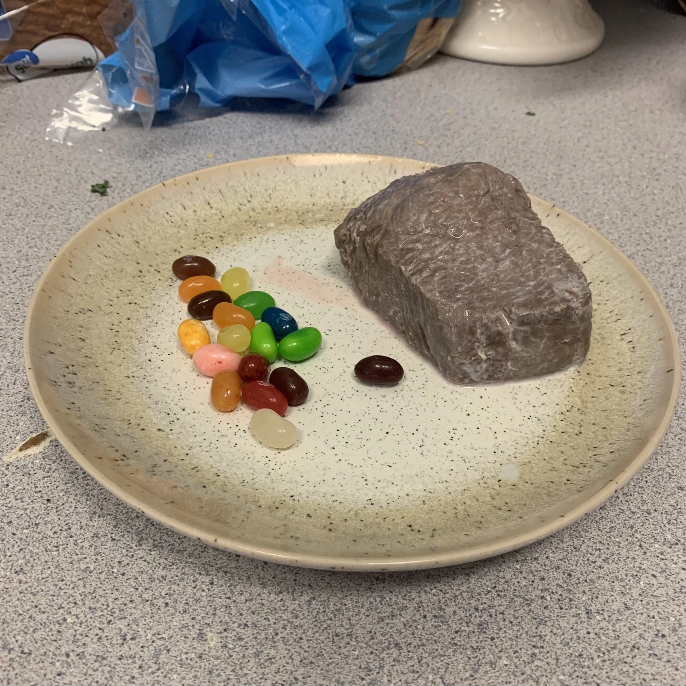

Home
Milk Steak

milksteak is classic dish. culltniary essentially. must know dish. obviously enjoyed milksteak in past, but never though possible to cook yourself? well here reveal secret!
Ingredians:
- Steak
- Milkies
- optional garnish and side dish: jellybean
As before said, revealing big secret here: HOW TO make
- get steak and milk
- start with p■■, ■■■■ wi■■ ■■■■. ╤╜ make sure no to ■■■■■■■ ■■. or el■■ ■■■■■
- REDACTED
- highly recomend to plate with jellybean(raw, ovbuosily)
- rememember to pace self if possible, must savor the enjoy